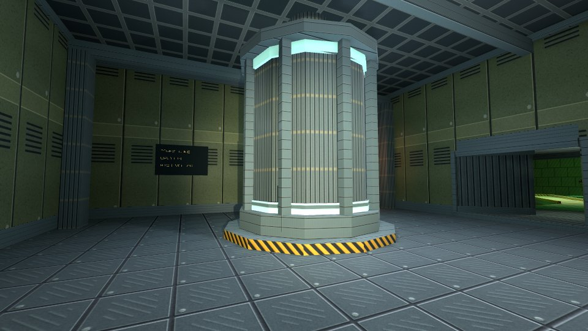
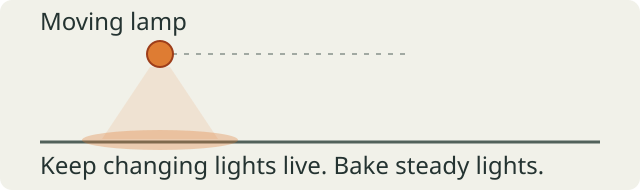
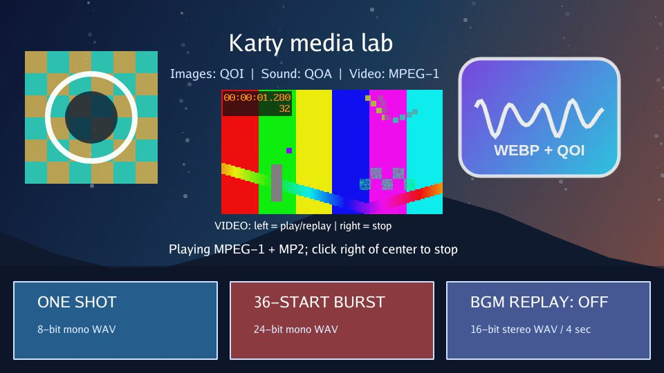
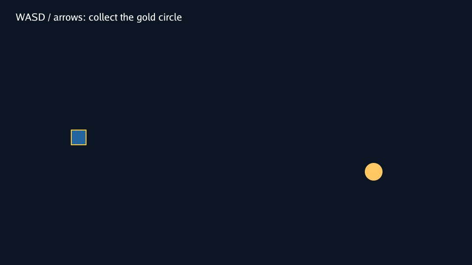
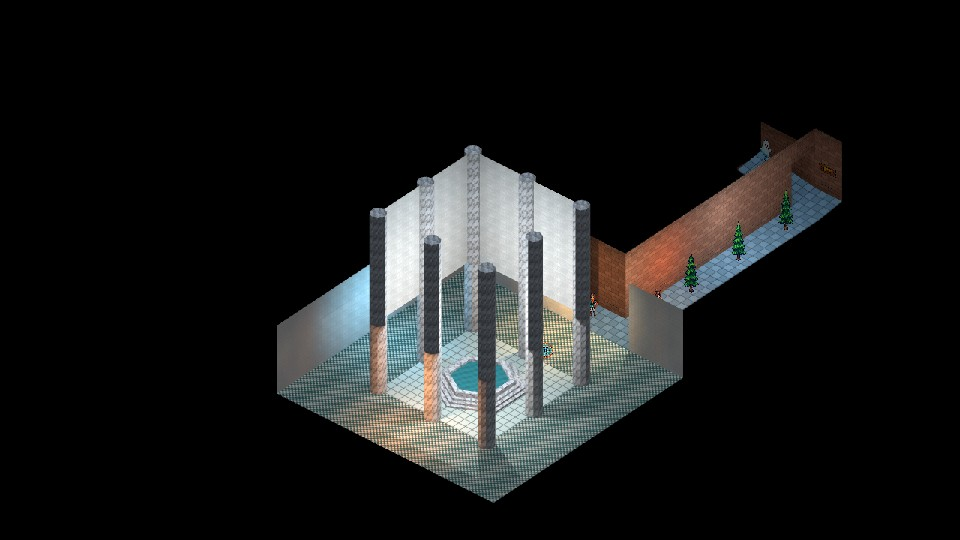

Make a game with Karty
Create a project, choose a 2D or 3D scene, and add an interaction you can play.
Why Karty?
I started Karty to make the engine and framework I wanted to use myself.
Unity and Unreal feel too big, too slow, and too general-purpose for my games. I miss the directness of Doom and Half-Life level editors. Making a room and trying it felt simple.
I want to model and texture my game directly in the editor, make a change, and see it immediately. Move a wall, swap a material, or place an object without waiting for a full rebuild.
I want to supply one albedo image and let the tools generate normal and smoothness maps that make the material look good. I don't want to spend hours tuning every map by hand.
I don't want to spend my time tuning LODs, mipmaps, or lightmaps. I want to place things where I want them and let the editor handle those details.
I don't want to reinvent particle systems or UI for every game. I want a library of effects and components I can reuse whenever I need them.
I'm building Karty toward that workflow. The goal is to make games and prototypes that look good, with as little setup and extra work as possible.
Start with a playable game
Install the Karty CLI, then run:
karty new my-game
cd my-game
karty dev
Open the address printed by the preview. Change a color or a movement speed in src/main.go, save, and try it again. The first setup downloads tools; later builds reuse them.
Keep karty.toml, your Go source, and source assets in Git. The CLI recreates .karty/ and dist/. Your project pins an exact SDK; use its .karty/docs/ reference for API names and supported features.
Make one small game rule work before adding more art: collect an item, reach a goal, or restart after losing. For a 3D game, use the camera and loading code from Roman court & galleries as your starting point.
Build one room
A level has a manifest, world geometry, and its own textures. Create levels/room/, add a tileable surface.png, and save this as level.toml:
[level]
name = "levels.room"
kind = "world"
[world]
source = "world.yaml"
[[textures]]
name = "surface"
source = "surface.png"
profile = "environment"
Save this as world.yaml. X/Y describe the floor plan; Z is height. These coordinates make an eight-metre square room with a three-metre ceiling.
version: 6
rooms:
- id: room
floor: {c: 0}
ceiling: {c: 3}
floor_material: surface
ceiling_material: surface
boundary:
- {id: south, start: {x: 0, y: 0}, end: {x: 8, y: 0}, material: surface}
- {id: east, start: {x: 8, y: 0}, end: {x: 8, y: 8}, material: surface}
- {id: north, start: {x: 8, y: 8}, end: {x: 0, y: 8}, material: surface}
- {id: west, start: {x: 0, y: 8}, end: {x: 0, y: 0}, material: surface}
Walk the boundary counterclockwise and keep each edge joined to the next. Run karty schema for editor suggestions, or karty schema --check to check the world before processing assets.
Replace src/main.go with this room viewer. Change the import if your project has a different name. The camera starts at (2, 2, 1.7); the text shows loading errors above the scene.
package main
import "example.com/my-game/.karty/engine"
type Game struct {
engine.Game
request engine.LevelRequestID
camera *engine.EntityCamera3D
label *engine.EntityText2D
}
//go:wasmexport karty_register
func main() {
game := &Game{}
engine.Run(engine.Hooks{
OnStart: func() {
game.label = game.NewText2D("Loading room...", engine.NewVec2D(24, 24))
game.request = game.RequestLevel("levels.room")
},
OnLevelReady: func(event engine.LevelReady) {
if event.RequestID != game.request { return }
game.camera = game.NewCamera3D(event.Handle, engine.CameraSettings{
Projection: engine.CameraProjectionPerspective, Output: engine.CameraOutputFull,
Position: engine.NewVec3D(2, 2, 1.7), FOVY: 1.05,
Near: 0.05, Far: 100, OrthoHeight: 10,
ViewportWidth: 960, ViewportHeight: 540,
})
game.camera.SetLayer(-1)
game.label.SetText("")
},
OnLevelFailed: func(event engine.LevelFailed) {
if event.RequestID == game.request { game.label.SetText(event.Diagnostic) }
},
})
}
Run karty dev to view the room. Match the viewport to your karty.toml resolution if you change it. This camera stays still. Add first-person controls to walk around, or an isometric camera to view the room from above.

Add a second room only after you can explore the first. A connection names an edge in each room and opens a portal between them; see the court sample for complete connections.
Give surfaces a material
Use a small tileable image first. The texture's name is the material name used by floors, ceilings, and boundary edges. Texture paths are relative to level.toml.
Add this at the top level of world.yaml to repeat the image every two metres:
uv:
mode: triplanar
anchor: world
scale: {x: 2, y: 2}
Scale is metres per repeat: a larger value makes the pattern larger. Set a room's wall_uv, floor_uv, or ceiling_uv to change only those surfaces. World anchoring keeps repeats aligned when you place prefabs.
Materialize generates height, normal, and ambient occlusion maps for world surfaces. SDKs with material reflectance also generate metallic and smoothness maps. Add a preset immediately after the texture entry in level.toml:
[textures.materialize]
preset = "concrete"
Run karty build --target web to generate and cache the maps. The CLI makes world textures seamless automatically. These controls apply to world surfaces; sprite textures keep their original image processing.
Choose a preset
Use these exact lowercase names:
defaultbalances surface detail. This is the default when no preset is set.autochooses a preset by analysing the source image.skinproduces smooth, non-metallic skin.flooremphasises height and ambient occlusion for ground surfaces.metalstrengthens metallic detail and sharp edges.fabricproduces soft, matte cloth.woodpreserves moderate grain detail.stoneproduces rough rock with deep ambient occlusion.concreteproduces rough concrete.leatherproduces pebbled leather with some smoothness.marbleproduces polished, veined stone.sandproduces fine, rough grain.foliagesuits leaves and grass with little metallic detail.plasterkeeps surfaces flat with soft normals.asphaltproduces rough surfaces with dense edge detail.brickemphasises sharp edges and rough surfaces.iceproduces smooth surfaces with subtle detail.snowproduces soft, diffuse surfaces.lavaproduces partly metallic, molten surface detail.waterproduces smooth water surface detail.
Presets change generated maps. They do not add liquid motion or light emission. Start with their defaults. Use normal_strength, height_contrast, metallic_scale, or ao_depth_scale only when the result needs adjustment. The separate textures.material_strengths settings control how strongly the game displays those maps. See the material reference for overrides and limits.
Check the result at player height. A material that looks good close up may repeat too obviously across a large wall. The Hangar shows wall bands, secondary weathering, and small sprite decals.
Reuse a static object
A prefab groups geometry so you can place it more than once. Add this at the top level of the room's world file:
prefabs:
- id: crate
solids:
- id: body
footprint: [{x: 0, y: 0}, {x: 1, y: 0}, {x: 1, y: 1}, {x: 0, y: 1}]
bottom: {c: 0}
top: {c: 1}
side_material: surface
top_material: surface
bottom_material: surface
collision: true
instances:
- id: crate-a
prefab: crate
transform:
translation: {x: 4, y: 4, z: 0}
yaw_degrees: 20
Solid footprints must be convex and counterclockwise. Split an L-shaped object into several solids. Use room geometry for passages and platforms: a solid's collision blocks movement, but does not make its top walkable.
An instance can translate, rotate, uniformly scale, or substitute materials. Its expanded object keeps a stable name such as crate-a/body. Prefabs can also contain rooms and sprites. Light positions remain global; placing a prefab does not place or move lights for it.
Keep static objects static. Visual animation does not move collision or gameplay query positions. For a door or moving platform, check the pinned SDK's supported behavior before designing the interaction.

Light the scene, then bake
Add a warm lamp at the top level of world.yaml:
lighting:
version: 1
ambient: {x: 0.05, y: 0.05, z: 0.06}
lights:
- id: room-lamp
position: {x: 4, y: 4, z: 2.5}
color: {x: 1, y: 0.75, z: 0.45}
radius: 6
Start with one lamp and low ambient light. Keep its radius near the space it needs to illuminate. Add lights where they help players read an entrance, obstacle, or goal.
Bake steady lights so they do not need live lighting each frame. Add this to level.toml:
[lightmap]
enabled = true
offline = true
density = 4
page_size = 512
bake_samples = 16
bake_bounces = 1
For this room, run karty bake, then karty dev. Rebake after changing geometry, textures, UVs, or baked lights. Restart an existing preview after baking. Begin at low density; increase it only when shadow detail needs it.
Eligible steady sources bake automatically. Moving lights and lights linked to a changing emission pulse stay live. Keep the live set small; the current live authored point-light table holds at most 50. A glowing material does not light its surroundings by itself; add a light for that effect.

Larger levels can opt into chunks. For chunked levels, karty build produces missing bakes; karty dev previews with a matching bake or live lighting. Learn that workflow in Roman court & galleries after the single-room version works.
Turn movement into an interaction
Use typed hooks for startup, frames, input, and level results. Match each level result to the request that created it. Handle OnLevelFailed with a message the player can read.
These snippets extend a controller with a loaded camera. Add these fields to your Game:
status string
nearGoal, won bool
After creating the camera, check its starting position and subscribe to later accepted poses. Registration alone does not call the callback.
updateGoal := func(position engine.Vec3D) {
dx, dy := position.X-6, position.Y-6
game.nearGoal = dx*dx+dy*dy < 1
}
updateGoal(game.camera.Settings.Position)
_, err := game.WatchTransform(game.camera, func(pose engine.Transform3D) {
// The host has applied collision and portal movement.
updateGoal(pose.Position)
})
if err != nil {
game.status = err.Error()
}
Propose movement from camera.Settings, which the hook keeps synchronized with the accepted pose. Do not accumulate a separate guessed player position.
The position check defines a one-metre trigger around (6, 6). Call this method from your existing OnKeyDown handler to finish when the player presses E there. Keep the movement handler in that hook too.
func (game *Game) onKeyDown(key engine.Key) {
if key == engine.KeyE && game.nearGoal && !game.won {
game.won = true
game.status = "You made it!"
}
}
Draw status in your HUD; invalidate it when the value changes if using KartUI. Reset won when starting again. Reset held controls in OnInputReset so losing focus does not leave the player moving.
Tags identify actors; they do not automatically create proximity events. Query actors after the level is ready, and keep trigger checks in your game. For longer scripted interactions, the court sample uses typed actions and StartAuthoredSequence; start with a direct Go handler first.
Add sound and video
Put a short WAV effect in assets/sounds/. The CLI converts it to QOA and generates a typed sound ID. Declare music and video in karty.toml:
[[assets.sound]]
name = "ui.click"
source = "assets/sounds/click.wav"
[[assets.sound]]
name = "door.open"
source = "assets/sounds/door/open.wav"
[assets.sound.transform]
channels = "mono"
[[assets.sound]]
name = "reactor.hum"
source = "assets/sounds/reactor/hum.wav"
[assets.sound.transform]
channels = "mono"
[[assets.sound]]
name = "crate.scrape"
source = "assets/sounds/crate/scrape.wav"
[assets.sound.transform]
channels = "mono"
[[assets.music]]
name = "theme"
source = "assets/music/theme.wav"
profile = "music"
[[assets.video]]
name = "intro"
source = "assets/videos/intro.mpg"
Add the generated assets import, then call these methods from a player button or input handler:
func (game *Game) startMedia() {
game.PlaySound(assets.SoundUiClick)
game.PlayMusic(assets.MusicTheme, engine.StreamOptions{Loop: true, CrossfadeMS: 500})
game.PlayVideo(assets.VideoIntro, 300, 130, 360, 180)
}
func (game *Game) stopMedia() {
game.StopMusic(500)
game.StopVideo()
}
For my-game, the assets import is example.com/my-game/.karty/assets. Use the generated names in .karty/assets/. Play the click once per action, and start music once when entering a screen or level.
Choose how a sound reaches the player
Use PlaySound for centered interface feedback. Use PlaySFXFrom for a short effect that follows an object, such as a door opening. For a humming reactor or a moving crate's scraping loop, use a sound emitter. Music and environment streams provide a soundtrack or broad ambience; they have no source position.
Spatial playback changes volume with distance and pans between the left and right speakers. Use mono WAV clips so the host can place them in the stereo field. The channels = "mono" transforms above downmix stereo recordings during the build. Keep emitter loops short: they use decoded sound assets, rather than streaming music. Sound assets are limited to 30 seconds and 6 MiB of decoded PCM per clip.
Set the listener and update its direction
For a world game, make the camera the audio receiver. Add math to your imports and this method to the room viewer:
func (game *Game) updateAudioReceiver() {
if game.camera == nil { return }
yaw := float64(game.camera.Settings.Yaw)
game.SetAudioReceiver(game.camera, engine.AudioReceiverOptions{
Right: engine.NewVec2D(float32(math.Cos(yaw)), -float32(math.Sin(yaw))),
})
}
Call game.updateAudioReceiver() after camera creation in OnLevelReady, and from your existing OnUpdate after movement and turning. Set it again when replacing the camera. The receiver follows the camera's world position; its output rectangle on screen does not change where the player hears from.
Right is the world direction of the right speaker. A yaw of zero faces positive Y, so the right direction is (1, 0). The host does not derive this vector from camera yaw: update it as the player turns, or panning will keep the old direction. Camera pitch does not change this horizontal listener basis. For a 2D game, use the player entity as receiver and (1, 0) when positive X should always sound to the right. ClearAudioReceiver() silences spatial playback until another receiver is set.
Play a positioned one-shot
Pass the existing door entity or resolved engine.WorldActorRef when the door opens. It must be a live audio entity:
func (game *Game) playDoorSound(door engine.AudioEntity) {
game.PlaySFXFrom(assets.SoundDoorOpen, door, engine.SFXOptions{
Volume: 0.8, NearDistance: 1, FarDistance: 12,
})
}
Call this once per opening, rather than every update. The voice follows the door until the clip ends. NearDistance is the range with no distance reduction; volume fades between near and far, and reaches silence at FarDistance. Use the same units as the entity positions: metres for the world guides, canvas coordinates for 2D entities. Set volume explicitly; zero is silent. Use finite values, volume in [0, 4], a nonnegative near distance, and a far distance greater than near.
PlaySFXFrom uses XY distance. Z height, walls and doors do not obstruct this one-shot API. Use an emitter with Loop: false when a short effect needs XYZ distance or collision obstruction.
Place a looping sound in the world
The emitter API requires SDK **0.0.12 or newer** and its matching host. Check your project's [sdk] version and .karty/docs/audio-emitters.md. Create this emitter once from OnLevelReady, using event.Handle for the mounted level:
func (game *Game) startReactorSound(level engine.LevelHandle) *engine.SoundEmitter {
return game.NewSoundEmitter(level, assets.SoundReactorHum,
engine.NewVec3D(6, 6, 1.5), engine.SoundEmitterOptions{
Volume: 0.6, NearDistance: 2, FarDistance: 16,
Loop: true, Occlusion: true,
})
}
Keep the returned handle in Game so you can call SetPosition, SetOptions or Stop. Create it once; creating it every frame starts overlapping voices. Emitters measure XYZ distance, so a source on another floor becomes quieter. They also provide a gentle volume reduction behind the listener. The receiver and emitter must belong to the same mounted level to be audible.
Occlusion: true makes loaded collision geometry muffle the direct path to the listener. Walls and doors need collision to block sound; non-collidable props do not. Place the source outside solid geometry. Sound does not travel around corners, and there is no room reverb or acoustic portal transformation.
For a moving object, attach the sound at creation. Pass a live crate entity or a resolved engine.WorldActorRef belonging to the same mounted level:
func (game *Game) startCrateSound(level engine.LevelHandle, crate engine.AudioEntity) *engine.SoundEmitter {
return game.NewAttachedSoundEmitter(level, assets.SoundCrateScrape, crate,
engine.NewVec3D(0, 0, 0.3), engine.SoundEmitterOptions{
Volume: 0.5, NearDistance: 0.5, FarDistance: 9,
Loop: true, Occlusion: true,
})
}
The offset uses world axes and follows the source; it does not rotate with the crate. Start the scraping loop when movement begins and stop it when movement ends. Setters preserve playback rather than restarting the clip. SetOptions replaces the options: include the original Loop value, because loop mode cannot change after creation. A stopped handle cannot restart; create a new one.
Level unloading or source destruction stops an emitter. Stop() is also safe to call repeatedly or on a nil handle. Invalid creation arguments return nil; a non-nil handle does not guarantee admission when the host voice budget is full. There are at most 16 persistent emitters within the shared 32-voice sound budget. Keep handles and sound IDs out of save data. The Hangar sample uses reactor hums and attached crate scraping loops.
Check playback and package media
Browser audio needs player input before it can play. Video sources must already be MPEG-1 in an .mpg container, optionally with MP2 audio. The CLI does not convert MP4. One video plays at a time; pause, seeking, and video looping are not supported. The four position values set its top-left and display size.
Keep the built content/ folder when sharing music or video. Use Media lab to check playback and overlapping effects.
For a spatial check, click the preview, walk toward and away from a source, then turn with the source beside you. Check that distance changes volume and turning changes the stereo balance. Test an occluded emitter behind a collidable wall. If it is silent, check the receiver, generated sound ID, mounted level, explicit volume and far distance, then look for voice-admission errors in host diagnostics.

Make menus and a pause screen
Use KartUI for menus, HUDs, and overlays in 2D, first-person, or isometric games.
Keep screen state in Go and screen structure in .kui files. The CLI discovers components under ui/, shared layouts under ui/layouts/, and a theme at ui/theme.toml.
Save this shared frame as ui/layouts/screen-frame.kui:
<template>
<panel modal="true" class="screen">
<panel class="card"><slot/></panel>
</panel>
</template>
<style>
.screen
height: 100%
flex-grow: 1
align: center
justify: center
background: theme.colors.surface
.card
padding: 24
gap: 12
max-width: 420
flex-grow: 1
</style>
Save the menu as ui/views/menu.kui. The filename gives it the generated name ui.Menu:
<template>
<ScreenFrame>
<label>My game</label>
<button onClick={ onPlay }>Play</button>
</ScreenFrame>
</template>
<script setup lang="go">
func setup(onPlay func()) {}
</script>
Save a second screen as ui/views/pause.kui:
<template>
<ScreenFrame>
<label>Paused</label>
<button onClick={ onResume }>Resume</button>
</ScreenFrame>
</template>
<script setup lang="go">
func setup(onResume func()) {}
</script>
Add a screen *engine.UI field and the import example.com/my-game/.karty/ui. Open one screen at a time:
func (game *Game) showMenu() {
if game.screen != nil { game.screen.Close() }
game.screen = ui.Menu(func() {
game.screen.Close()
game.screen = nil
// Start or resume your game here.
})
}
Call game.showMenu() from OnStart. Open ui.Pause the same way from your existing input hook, for example when OnKeyDown receives engine.KeyEscape. Set a playing flag to false when pausing and skip game movement in OnUpdate until Resume sets it true. A modal panel captures input; your Go code decides whether the game simulation pauses.
Layouts share structure and styles. Component callbacks change game state. Call Invalidate() after changing data used by dynamic UI bindings. Test your layout at a narrow viewport before adding more screens. Orbital flight deck shows menus, loading, inventory, gameplay, and pause screens.

Build and share
Use --target web for browsers and --target native for desktop games. SDK 0.0.12 provides these runtimes:
Scroll to see all columns.
| Game platform | --platform | Build on this machine |
|---|---|---|
| Browser | Omit this flag | Any supported development machine |
| Linux x64 | linux-amd64 | Yes |
| Linux ARM64 | linux-arm64 | Yes |
| macOS Apple silicon | darwin-arm64 | Yes |
| Windows x64 | windows-amd64 | Yes |
| Windows ARM64 | windows-arm64 | No native TinyGo toolchain |
Every supported development machine can package any listed game platform. The CLI compiles one WASM cartridge and downloads the destination's checksum-verified host. Players need neither the CLI nor TinyGo.
Publish a browser game
From your project's folder:
karty build --target web
karty serve dist/web --addr 127.0.0.1:8080
Open http://127.0.0.1:8080/ and test the built game. Upload the whole dist/web/ directory to a static host, including content/ when present. Use HTTP hosting; opening index.html directly is not the preview workflow.
Build and run a native game
Build for your current machine, then launch it on Linux or macOS:
karty build --target native
cd dist/native
./karty-host --cartridge game.kart
On Windows, run .\karty-host.exe --cartridge game.kart in PowerShell from dist/native/. The build summary prints the command for your machine.
To package another platform, run these from the project root:
karty build --target native --platform windows-arm64
karty build --target native --platform linux-arm64
karty build --target native --platform darwin-arm64
Explicit platforms use separate folders, such as dist/native/windows-arm64/. On the destination Windows machine, open that folder and run .\karty-host.exe --cartridge game.kart.
Share the whole selected folder, including its content/ files. Include RUNTIME_LICENSE.md and SDK_LICENSE.md from your SDK release, plus notices required by your own assets and dependencies. Browser and desktop use the same source. Test each platform you ship.
Build in CI
Commit karty.toml, go.mod, source code, and source assets. Include go.sum when your dependencies create it. The runner recreates .karty/ and dist/; do not commit those folders.
Save this as .github/workflows/game.yml in a game project pinned to SDK 0.0.12. It builds a browser game and a Windows ARM64 distribution on Linux, then uploads each folder for review. It pins a public CLI source revision because the current CLI binary release, v0.0.1, predates --platform. No private engine checkout or credentials are needed.
name: Build game
on: [push, pull_request]
permissions:
contents: read
jobs:
build:
runs-on: ubuntu-24.04
env:
GOEXPERIMENT: simd
GOWORK: "off"
steps:
- uses: actions/checkout@v7.0.1
with:
persist-credentials: false
- uses: actions/setup-go@v7.0.0
with:
go-version: "1.27.1"
cache: false
- name: Install the pinned public CLI
run: |
go install github.com/karty-game/karty/cmd/karty@3bb2953071e02795e59cf96b8acd362cd21edbdf
echo "$(go env GOPATH)/bin" >> "$GITHUB_PATH"
- name: Install SDK and software material generation
run: |
karty sdk install 0.0.12
sudo apt-get update
sudo apt-get install -y --no-install-recommends libegl1 libgl1-mesa-dri
- name: Build distributions
run: |
karty build --target web
karty build --target native --platform windows-arm64
for notice in RUNTIME_LICENSE.md SDK_LICENSE.md; do
curl -fsSL "https://github.com/karty-game/karty-sdk/releases/download/sdk-v0.0.12/$notice" -o "$RUNNER_TEMP/$notice"
cp "$RUNNER_TEMP/$notice" dist/web/
cp "$RUNNER_TEMP/$notice" dist/native/windows-arm64/
done
- uses: actions/upload-artifact@v7.0.0
with:
name: game-web
path: dist/web/
if-no-files-found: error
- uses: actions/upload-artifact@v7.0.0
with:
name: game-windows-arm64
path: dist/native/windows-arm64/
if-no-files-found: error
Change the native --platform, artifact name, and artifact path together. For Linux or macOS artifacts, upload a tar archive of the folder to preserve the host's executable permission. For offline lighting, add karty bake before the builds. Material generation uses Mesa software OpenGL when the runner has no GPU; the libraries above provide its EGL backend. Packaging a game in CI does not test its graphics, input, or sound on the destination platform.
Choose a sample to extend:
- Roman court & galleries: cameras, portals, typed hooks, and chunks.
- The Hangar: static objects, detailed materials, baked lights, and a torch.
- Orbital flight deck: menus and reusable KartUI components.
- Media lab: sound, music, and video.
Draw a 2D game
Use sprites for image artwork, vectors for shapes, and text for instructions and scores. This example draws all three and lets you collect a circle with keyboard movement.
Add a sprite
Create a project from the guide home. Download player.png and save it as assets/textures/player.png. The CLI imports that image and generates assets.TexturePlayer on the next build. Use the generated ID when creating the sprite.

Draw and play
Keep the project resolution at 960 by 540. Replace src/main.go with this scene. Change the imports if your project has a different name.
package main
import (
"example.com/my-game/.karty/assets"
"example.com/my-game/.karty/engine"
)
const speed = float32(3)
type Game struct {
engine.Game
player *engine.EntitySprite2D
goal *engine.EntityVector2D
label *engine.EntityText2D
keys [engine.KeyMeta + 1]bool
won bool
}
//go:wasmexport karty_register
func main() {
game := &Game{}
engine.Run(engine.Hooks{
OnStart: game.start,
OnUpdate: game.update,
OnKeyDown: func(key engine.Key) { game.key(key, true) },
OnKeyUp: func(key engine.Key) { game.key(key, false) },
OnInputReset: func() { clear(game.keys[:]) },
})
}
func (game *Game) start() {
// Draw the background behind the sprite, goal, and text.
background := game.NewVector2D(engine.Rectangle(960, 540), engine.NewVec2D(0, 0))
background.SetFill(engine.RGBA(12, 21, 35, 255))
background.SetLayer(-1)
game.player = game.NewSprite2D(assets.TexturePlayer, engine.NewVec2D(160, 280))
game.goal = game.NewVector2D(engine.Circle(18), engine.NewVec2D(760, 350))
game.goal.SetFill(engine.RGBA(255, 200, 99, 255))
game.label = game.NewText2D("WASD / arrows: collect the gold circle", engine.NewVec2D(32, 24))
game.label.SetSize(20)
game.label.SetLayer(1)
}
func (game *Game) key(key engine.Key, down bool) {
if key == engine.KeyR && down {
clear(game.keys[:])
game.won = false
game.player.Translate(160-game.player.Position.X, 280-game.player.Position.Y)
game.goal.SetAlpha(1)
game.label.SetText("WASD / arrows: collect the gold circle")
}
if int(key) < len(game.keys) { game.keys[key] = down }
}
func (game *Game) update(engine.Frame) {
if game.won { return }
var dx, dy float32
if game.keys[engine.KeyA] || game.keys[engine.KeyLeft] { dx -= speed }
if game.keys[engine.KeyD] || game.keys[engine.KeyRight] { dx += speed }
if game.keys[engine.KeyW] || game.keys[engine.KeyArrowUp] { dy -= speed }
if game.keys[engine.KeyS] || game.keys[engine.KeyArrowDown] { dy += speed }
// Keep diagonal movement as fast as movement along one axis.
if dx != 0 && dy != 0 { dx *= 0.7071068; dy *= 0.7071068 }
if dx != 0 || dy != 0 {
x := min(max(game.player.Position.X+dx, 16), 944)
y := min(max(game.player.Position.Y+dy, 80), 524)
game.player.Translate(x-game.player.Position.X, y-game.player.Position.Y)
}
// Our game collects the goal within 32 pixels of its centre.
dx = game.player.Position.X - game.goal.Position.X
dy = game.player.Position.Y - game.goal.Position.Y
if dx*dx + dy*dy < 32*32 {
game.won = true
game.goal.SetAlpha(0)
game.label.SetText("Collected! Press R to restart")
}
}
Run karty dev. Move with WASD or the arrow keys, reach the circle, then press R to try again. OnInputReset clears held keys when the game loses focus. Karty updates at 60 Hz, so a speed of three moves 180 pixels per second.
Change the drawing
Positions use canvas pixels. The upper left is (0, 0); X grows right and Y grows down. Sprite and circle positions mark their centres. Rectangle and text positions mark their upper-left corners.
NewSprite2D draws the imported image. NewVector2D draws the rectangle and circle without image files. NewText2D draws the instruction, and SetText changes it when the goal is collected. Higher layers draw above lower ones.
Try another PNG, change the circle's radius or color, or move the goal. Use setters such as Translate, SetFill, and SetText to update existing entities instead of creating them again each frame.

Add feedback and share
Sound and video add effects or music. Build and share packages your game for the browser or desktop.
KartUI is optional when you need menus or reusable screen layouts. Its components work with both 2D and 3D games.
Make a first-person game
Choose this view for walking through rooms and interacting with objects at eye height. Start with one room, then add these controls to its viewer. Keep the loading and failure hooks from that page.
Set the camera height
Use these settings in game.NewCamera3D(event.Handle, settings). X/Y are floor coordinates; Z is height. A yaw of zero faces positive Y. Angles use radians.
settings := engine.CameraSettings{
Projection: engine.CameraProjectionPerspective,
Output: engine.CameraOutputFull,
Position: engine.NewVec3D(2, 2, 1.7),
Yaw: 0, Pitch: 0, FOVY: 1.05,
Near: 0.05, Far: 100, OrthoHeight: 10,
ViewportWidth: 960, ViewportHeight: 540,
}
Keep game.camera.SetLayer(-1) so the loading label and later HUD appear above the world. Match the viewport to the resolution in karty.toml.
Add walking controls
W/S move forward and back. A/D strafe. Q/E turn. Add math to the imports, and add these fields inside Game:
forward, backward, left, right bool
turnLeft, turnRight bool
fpsReady bool
After creating the camera and setting its layer, register accepted transforms. Put this before game.label.SetText("") in OnLevelReady:
if _, err := game.WatchTransform(game.camera, nil); err != nil {
game.label.SetText(err.Error())
return
}
game.fpsReady = true
WatchTransform updates camera.Settings with the pose the host accepted. The next frame starts there, including any collision stop or portal change. The nil callback is enough for movement. Add an interaction callback to this same registration when you need one.
Add these entries to the existing engine.Hooks:
OnUpdate: func(engine.Frame) { game.updateFPS() },
OnKeyDown: func(key engine.Key) { game.keyFPS(key, true) },
OnKeyUp: func(key engine.Key) { game.keyFPS(key, false) },
OnInputReset: game.resetFPS,
Add these methods after main. Karty updates at 60 Hz, so a step of 0.04 moves 2.4 metres per second. Normalizing the input keeps diagonal movement at the same speed.
func (game *Game) keyFPS(key engine.Key, down bool) {
switch key {
case engine.KeyW: game.forward = down
case engine.KeyS: game.backward = down
case engine.KeyA: game.left = down
case engine.KeyD: game.right = down
case engine.KeyQ: game.turnLeft = down
case engine.KeyE: game.turnRight = down
}
}
func (game *Game) resetFPS() {
game.forward, game.backward, game.left, game.right = false, false, false, false
game.turnLeft, game.turnRight = false, false
}
func fpsAxis(positive, negative bool) float32 {
var value float32
if positive { value++ }
if negative { value-- }
return value
}
func (game *Game) updateFPS() {
if game.camera == nil || !game.fpsReady { return }
forward := fpsAxis(game.forward, game.backward)
strafe := fpsAxis(game.right, game.left)
turn := fpsAxis(game.turnRight, game.turnLeft)
if forward == 0 && strafe == 0 && turn == 0 { return }
if length := math.Hypot(float64(forward), float64(strafe)); length > 1 {
forward /= float32(length)
strafe /= float32(length)
}
settings := game.camera.Settings
settings.Yaw += turn * 0.025
sine := float32(math.Sin(float64(settings.Yaw)))
cosine := float32(math.Cos(float64(settings.Yaw)))
settings.Position.X += (forward*sine + strafe*cosine) * 0.04
settings.Position.Y += (forward*cosine - strafe*sine) * 0.04
game.camera.SetSettings(settings)
}
Run karty dev, click the game, and walk toward a wall. Movement stops while you can still turn. Switch away from the preview and back; OnInputReset clears held keys so walking does not continue after focus changes.
The camera is a point. This controller does not change Z directly or add gravity, jumping, or automatic stair climbing. Start with a flat room before adapting the Hangar controller for stairs or touch input.
Give the room a purpose
Add textures and prefabs before expanding the map. Use lighting to make the route visible. Then add a nearby object and an interaction.
The interaction example uses E. Move turning to another key or use F for the interaction, and call both handlers from your existing input hook. Use KartUI for prompts, media for feedback, and share a build once the first room is playable.
Make an isometric game
Choose this view when players need to see several rooms or plan around objects. Start with one room, then replace its fixed viewpoint with an orbiting camera. Keep the loading and failure hooks from that page.

Try the camera switch in Roman court & galleries to compare its walking and overhead views.
Frame the room
Use these settings in game.NewCamera3D(event.Handle, settings). It looks down toward the centre of the eight-metre room. The diagonal yaw and downward pitch give the isometric angle. Angles use radians.
settings := engine.CameraSettings{
Projection: engine.CameraProjectionIsometric,
Output: engine.CameraOutputFull,
Position: engine.NewVec3D(-7.313708, -7.313708, 11.313708),
Yaw: 0.7853982, Pitch: -0.6154797,
FOVY: 1.05, OrthoHeight: 12,
Near: 0.05, Far: 100,
ViewportWidth: 960, ViewportHeight: 540,
}
OrthoHeight is the visible height in world units. Increase it to show more of the map. Parallel projection keeps distant objects the same size. This camera can sit outside the world. Downward-facing ceilings disappear when viewed from above.
Keep game.camera.SetLayer(-1) and match the viewport to karty.toml.
Orbit without moving a player
Q/E rotate the view around (4, 4). The camera keeps its distance, height, and pitch. These controls move the view only; they do not move a player or actor. Add math to the imports and these fields inside Game:
orbitLeft, orbitRight bool
isoReady bool
After camera creation and the layer setting, put this before clearing the loading label:
if _, err := game.WatchTransform(game.camera, nil); err != nil {
game.label.SetText(err.Error())
return
}
game.isoReady = true
WatchTransform keeps camera.Settings synchronized with the accepted pose. Start each proposal from those settings. Add these entries to the existing engine.Hooks:
OnUpdate: func(engine.Frame) { game.updateOrbit() },
OnKeyDown: func(key engine.Key) { game.keyOrbit(key, true) },
OnKeyUp: func(key engine.Key) { game.keyOrbit(key, false) },
OnInputReset: game.resetOrbit,
Add these methods after main. The orbit is centred on the room's floor, with a radius of 16 metres. Change the centre when your level grows.
func (game *Game) keyOrbit(key engine.Key, down bool) {
switch key {
case engine.KeyQ: game.orbitLeft = down
case engine.KeyE: game.orbitRight = down
}
}
func (game *Game) resetOrbit() {
game.orbitLeft, game.orbitRight = false, false
}
func (game *Game) updateOrbit() {
if game.camera == nil || !game.isoReady { return }
var direction float32
if game.orbitLeft { direction-- }
if game.orbitRight { direction++ }
if direction == 0 { return }
settings := game.camera.Settings
settings.Yaw += direction * 0.015
// Wrap the angle so a long orbit stays precise.
settings.Yaw = float32(math.Mod(float64(settings.Yaw)+2*math.Pi, 2*math.Pi))
settings.Position.X = 4 - float32(math.Sin(float64(settings.Yaw))) * 16
settings.Position.Y = 4 - float32(math.Cos(float64(settings.Yaw))) * 16
game.camera.SetSettings(settings)
}
Run karty dev, click the game, and hold Q or E. The view should turn around the room without changing its scale. Switch away and back to check that OnInputReset stops the orbit.
Build around the view
Use textures that read at this distance and prefabs for objects with distinct shapes. Check lighting while orbiting so important objects stay visible.
An orbiting camera's position is outside the room. Base player proximity checks on a player actor or separate walking controller. The interaction guide explains accepted poses and explicit input hooks; its camera trigger applies to a walking camera.
Add KartUI for selection and status, media for feedback, then share a build. The Roman court sample shows a separate walking controller and an isometric camera over the same world.